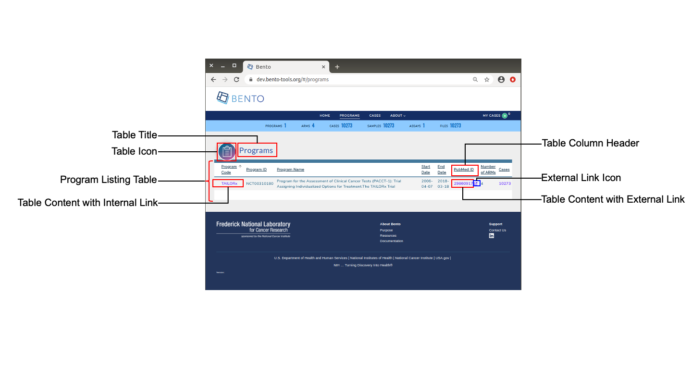

6. The Programs Page¶
The Programs Page lists the programs that store data in a Bento-based data sharing platform equipped with multiple configurable components. See below for details.

Programs Page. Displayed are the configurable elements of a Bento Programs Page. These are: Table Title, Table Icon, Table Column Headers, Table Content, embedded Internal and External URLs and External Link Icon.
6.1. Prerequisites¶
The files that specify the configuration parameters of the Programs Page are stored in GitHub
https://github.com/CBIIT/bento-frontend(representing your GitHub username asYOUR-USERNAME). Create a local clone of your fork into a local directory, represented in these instructions as$(src).Configuration parameters for all Programs Page Elements can be specified in the file:
$(src)/packages/bento-frontend/src/bento/programData.js.All images and icons used in a Bento instance should be accessible via a public url.
Please review the list of GraphQL queries to select query type(s) that return the data of interest.
6.2. Icons in the Programs Page.¶
There are two configurable icons in the Programs Page: (a) the Table Icon, that is a visual represenation of the Programs Table and (b) the External Link Icon that is a visual representation of an external link.
6.2.1. Configuring the Icons in the Programs Page.¶
Open
$(src)/packages/bento-frontend/src/bento/programData.js.Under
programListingIcon:Set the field
srcto the URL of the table icon image file.Set the fild
altto the ALT tag for the table icon.
Under
externalLinkIcon:Set the field
srcto the URL of the external link icon image file.Set the field
altto the ALT tag for the external link icon.
Example:
const programListingIcon = {
src: 'URL for your Table Icon',
alt: 'ALT tag for your Table Icon',
};
const externalLinkIcon = {
src: 'URL for your External Link Icon',
alt: 'ALT tag for your External Link Icon',
};
6.3. The Programs Page Table¶
The table in the Programs page lists the programs that store data in a Bento-based data sharing platform.
6.3.1. Configuring the Programs Page Table.¶
Open
$(src)/packages/bento-frontend/src/bento/programData.js.In
table:The
displayfield is set to true, by default. Set this field to false to disable the table in the Programs Page.Set the field
titleto the the title of the table.Set the field
dataFieldto the name of the GraphQL API query being used to return data for the Programs Page. Note: This query should match the GraphQL API query inGET_PROGRAMS_DATA_QUERY.Set the field
defaultSortFieldto the name of the query field that will be used to sort the Programs Page table. Note: this query field should be displayed as one of the columns in the Program Page table.Set the field
defaultSortDirectionto the sort order to be displayed. Valid values are ‘asc’ (ascending) and ‘desc’ (descending).Add the GraphQL API query to
GET_PROGRAMS_DATA_QUERY.
Example:
...
const table = {
display: true,
title: '<Table Title>',
dataField: '<GraphQL API query returning data for this page.>',
defaultSortField: '<GraphQL API query field used to sort the table.>',
defaultSortDirection: '<sort order, asc|desc>',
...
};
const GET_PROGRAMS_DATA_QUERY = gql{
'<Your GraphQL query>'' {
'<Data fields returned by your GraphQL API query>'
...
}
};
6.3.2. Adding Columns to the Programs Page Table¶
Up to 10 columns can be added to the Programs Page table. If you add more than 10 columns, Bento will display the first 10 columns without an error or warning message. The top-down order of columns will be displayed left to right on the UI.
Open
$(src)/packages/bento-frontend/src/bento/programData.js.Under
table,Add an object {dataField:, header: , link: } to
columns:Set the field
dataFieldto the GraphQL API query data field that returns the data for the column.Set the field
headerto the column header name.Set the field
linkto an internal or external link that is to be embedded into the the column value. See below for additional instructions on adding internal and external links. Links are optional.
Add your GraphQL API query data field to
GET_PROGRAMS_DATA_QUERY.
Example:
const table = {
...
columns: [
{
dataField: '<GraphQL API query field returning data for this column>',
header: '<Column Header>',
link: '<link to be embedded in column value>',
},
{
dataField: '<GraphQL API query field returning data for this column>',
header: 'PubMed ID',
},
...
],
};
const GET_PROGRAMS_DATA_QUERY = gql`{
'<Your GraphQL query>'' {
'<Data fields returned by your GraphQL API query>'
...
}
}
6.3.2.1. Internal Links in the Programs Page Table¶
Links starting with ‘/’ are considered as internal links.
Internal links will be opened in the same tab.
Dynamic links can be generated by passing a valid table field to ‘{}’. For example, ‘/program/{program_id}’ shall link to ‘program/NCT00310180’.
6.3.2.2. External Links in the Program Page Table.¶
External links shall start with ‘http://’ or’https://’.
External links shall show-up with ‘externalLinkIcon’.
External link shall be opened in a new tab.
Dynamic links can be generated by passing a valid table filed to ‘{}’. For example, ‘https://pubmed.ncbi.nlm.nih.gov/{pubmed_id}’ shall link to ‘https://pubmed.ncbi.nlm.nih.gov/29860917/’.
6.4. Suggested Best Practices¶
Dimension of the Program Listing Icon= 100 X 100 pixels.
Dimension of the External Link Icon = 16 X 16 pixels.
All images should have a resolution >= 72 ppi and should be in the PNG format.